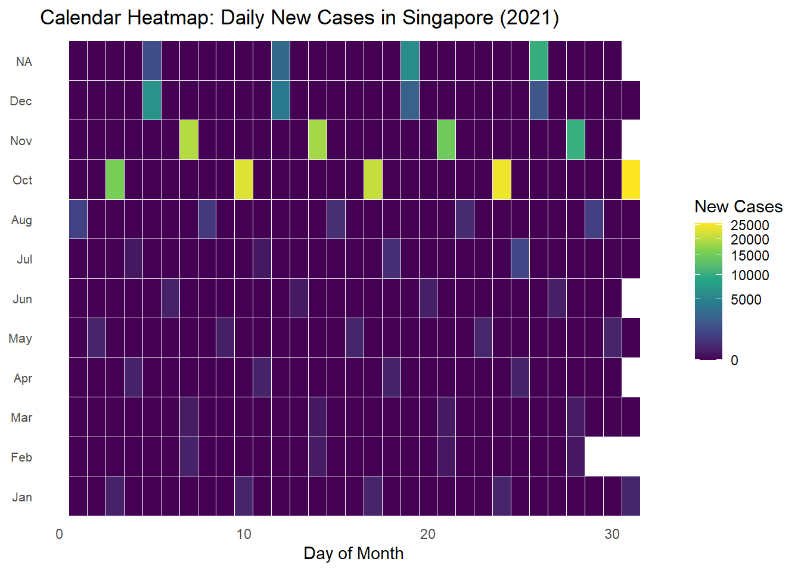
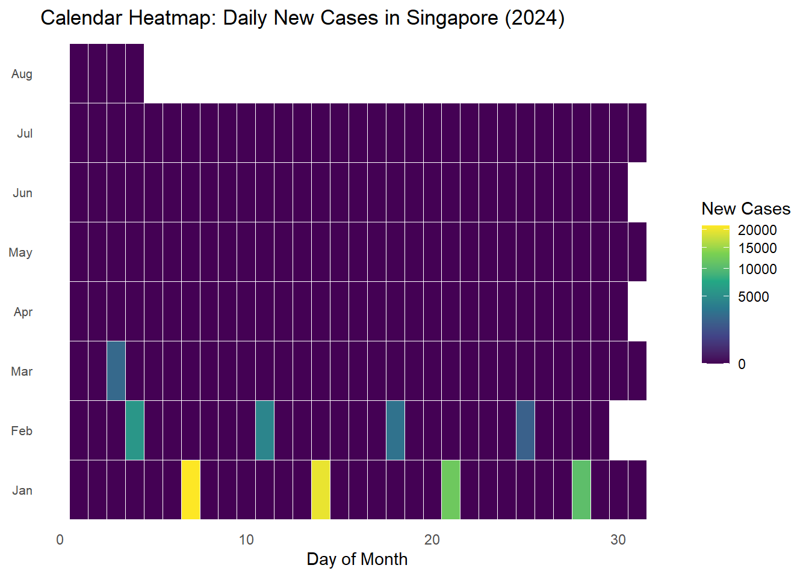

pacman::p_load(scales, viridis,
lubridate, ggthemes,
gridExtra, readxl,
knitr, data.table,
tidyverse,
CGPfunctions, ggHoriPlot)Hands-on Exercise 6
07 - Visualising and Analysing Time-oriented Data
10.1 Hands-on Exercise Outcome
By the end of this hands-on exercise we would have tried creating the followings data visualisation by using R packages:
- plotting a calender heatmap by using ggplot2 functions,
- plotting a cycle plot by using ggplot2 function,
- plotting a slopegraph
- plotting a horizon chart
10.2 Getting Started Installing and launching R packages
In this hands-on exercise, we will install and launch the following R packages: scales, viridis, lubridate, ggthemes, gridExtra, readxl, knitr, data.table and tidyverse.
10.3 Plotting Calendar Heatmap
In this section, we will beplotting a calender heatmaps, like the one below, programmatically by using ggplot2 package.

By end of this section, we will be able to:
- plot a calender heatmap by using ggplot2 functions and extension,
- to write function using R programming,
- to derive specific date and time related field by using base R and lubridate packages
- to perform data preparation task by using tidyr and dplyr packages.
10.3.1 The Data
For the purpose of this hands-on exercise, eventlog.csv file will be used. This data file consists of 199,999 rows of time-series cyber attack records by country.
10.3.2 Importing the data
The code chunk below to was used to import eventlog.csv file into R environment and called the data frame as attacks.
attacks <- read_csv("DataEx06/eventlog.csv")10.3.3 Examining the data structure
As a good practice, we aim to examine the imported data frame before further analysis is performed.
For example, kable() can be used to review the structure of the imported data frame.
kable(head(attacks))| timestamp | source_country | tz |
|---|---|---|
| 2015-03-12 15:59:16 | CN | Asia/Shanghai |
| 2015-03-12 16:00:48 | FR | Europe/Paris |
| 2015-03-12 16:02:26 | CN | Asia/Shanghai |
| 2015-03-12 16:02:38 | US | America/Chicago |
| 2015-03-12 16:03:22 | CN | Asia/Shanghai |
| 2015-03-12 16:03:45 | CN | Asia/Shanghai |
There are three columns, namely timestamp, source_country and tz.
- timestamp field stores date-time values in POSIXct format.
- source_country field stores the source of the attack. It is in ISO 3166-1 alpha-2 country code.
- tz field stores time zone of the source IP address.
10.3.4 Data Preparation
Step 1: Deriving weekday and hour of day fields
Before we can plot the calender heatmap, two new fields namely wkday and hour need to be derived. In this step, we will write a function to perform the task.
make_hr_wkday <- function(ts, sc, tz) {
real_times <- ymd_hms(ts,
tz = tz[1],
quiet = TRUE)
dt <- data.table(source_country = sc,
wkday = weekdays(real_times),
hour = hour(real_times))
return(dt)
}
Note
ymd_hms()andhour()are from lubridate package, andweekdays()is a base R function.
Step 2: Deriving the attacks tibble data frame
wkday_levels <- c('Saturday', 'Friday',
'Thursday', 'Wednesday',
'Tuesday', 'Monday',
'Sunday')
attacks <- attacks %>%
group_by(tz) %>%
do(make_hr_wkday(.$timestamp,
.$source_country,
.$tz)) %>%
ungroup() %>%
mutate(wkday = factor(
wkday, levels = wkday_levels),
hour = factor(
hour, levels = 0:23))
Note
Beside extracting the necessary data into attacks data frame, mutate() of dplyr package is used to convert wkday and hour fields into factor so they’ll be ordered when plotting
Table below shows the tidy tibble table after processing.
kable(head(attacks))| tz | source_country | wkday | hour |
|---|---|---|---|
| Africa/Cairo | BG | Saturday | 20 |
| Africa/Cairo | TW | Sunday | 6 |
| Africa/Cairo | TW | Sunday | 8 |
| Africa/Cairo | CN | Sunday | 11 |
| Africa/Cairo | US | Sunday | 15 |
| Africa/Cairo | CA | Monday | 11 |
10.3.5 Building the Calendar Heatmaps
grouped <- attacks %>%
count(wkday, hour) %>%
ungroup() %>%
na.omit()
ggplot(grouped,
aes(hour,
wkday,
fill = n)) +
geom_tile(color = "white",
size = 0.1) +
theme_tufte(base_family = "Helvetica") +
coord_equal() +
scale_fill_gradient(name = "# of attacks",
low = "sky blue",
high = "dark blue") +
labs(x = NULL,
y = NULL,
title = "Attacks by weekday and time of day") +
theme(axis.ticks = element_blank(),
plot.title = element_text(hjust = 0.5),
legend.title = element_text(size = 8),
legend.text = element_text(size = 6) )
Things to learn from the code chunk
- a tibble data table called grouped is derived by aggregating the attack by wkday and hour fields.
- a new field called n is derived by using
group_by()andcount()functions. na.omit()is used to exclude missing value.geom_tile()is used to plot tiles (grids) at each x and y position.colorandsizearguments are used to specify the border color and line size of the tiles.theme_tufte()of ggthemes package is used to remove unnecessary chart junk. To learn which visual components of default ggplot2 have been excluded, you are encouraged to comment out this line to examine the default plot.coord_equal()is used to ensure the plot will have an aspect ratio of 1:1.scale_fill_gradient()function is used to creates a two colour gradient (low-high).
Then we can simply group the count by hour and wkday and plot it, since we know that we have values for every combination there’s no need to further preprocess the data.
10.3.6 Building Multiple Calendar Heatmaps
Challenge: Building multiple heatmaps for the top four countries with the highest number of attacks.
top_countries <- attacks %>%
count(source_country, name = "total_attacks", sort = TRUE) %>%
slice_max(total_attacks, n = 4) %>%
pull(source_country)
grouped_top4 <- attacks %>%
filter(source_country %in% top_countries) %>%
count(source_country, wkday, hour, name = "n") %>%
ungroup() %>%
na.omit()
ggplot(grouped_top4,
aes(x = hour, y = wkday, fill = n)) +
geom_tile(color = "white", size = 0.1) +
facet_wrap(~ source_country, ncol = 2) + # 2 columns × 2 rows
coord_equal() +
theme_tufte(base_family = "Helvetica") +
scale_fill_gradient(
name = "# of attacks",
low = "sky blue",
high = "dark blue"
) +
labs(
x = NULL,
y = NULL,
title = "Attacks by Weekday & time of the day"
) +
theme(
axis.ticks = element_blank(),
plot.title = element_text(hjust = 0.5),
strip.text = element_text(face = "bold"),
legend.title = element_text(size = 8),
legend.text = element_text(size = 6)
)10.3.7 Plotting Multiple Calendar Heatmaps
Step 1: Deriving attack by country object
In order to identify the top 4 countries with the highest number of attacks, you are required to do the followings:
- count the number of attacks by country,
- calculate the percent of attackes by country, and
- save the results in a tibble data frame.
attacks_by_country <- count(
attacks, source_country) %>%
mutate(percent = percent(n/sum(n))) %>%
arrange(desc(n))Step 2: Preparing the tidy data frame
In this step, you are required to extract the attack records of the top 4 countries from attacks data frame and save the data in a new tibble data frame (i.e. top4_attacks).
top4 <- attacks_by_country$source_country[1:4]
top4_attacks <- attacks %>%
filter(source_country %in% top4) %>%
count(source_country, wkday, hour) %>%
ungroup() %>%
mutate(source_country = factor(
source_country, levels = top4)) %>%
na.omit()10.3.8 Plotting Multiple Calendar Heatmaps
Step 3: Plotting the Multiple Calender Heatmap by using ggplot2 package.
ggplot(top4_attacks,
aes(hour,
wkday,
fill = n)) +
geom_tile(color = "white",
size = 0.1) +
theme_tufte(base_family = "Helvetica") +
coord_equal() +
scale_fill_gradient(name = "# of attacks",
low = "sky blue",
high = "dark blue") +
facet_wrap(~source_country, ncol = 2) +
labs(x = NULL, y = NULL,
title = "Attacks on top 4 countries by weekday and time of day") +
theme(axis.ticks = element_blank(),
axis.text.x = element_text(size = 7),
plot.title = element_text(hjust = 0.5),
legend.title = element_text(size = 8),
legend.text = element_text(size = 6) )
10.4 Plotting Cycle Plot
In this section, we will learn how to plot a cycle plot showing the time-series patterns and trend of visitor arrivals from Vietnam programmatically by using ggplot2 functions. A sample cycle plot is as below.

10.4.1 Step 1: Data Import
For the purpose of this hands-on exercise, arrivals_by_air.xlsx will be used.
The code chunk below imports arrivals_by_air.xlsx by using read_excel() of readxl package and save it as a tibble data frame called air.
air <- read_excel("DataEx06/arrivals_by_air.xlsx")10.4.2 Step 2: Deriving month and year fields
Next, two new fields called month and year are derived from Month-Year field.
air$month <- factor(month(air$`Month-Year`),
levels=1:12,
labels=month.abb,
ordered=TRUE)
air$year <- year(ymd(air$`Month-Year`))10.4.3 Step 3: Extracting the target country
Next, the code chunk below is use to extract data for the target country (i.e. Vietnam)
Vietnam <- air %>%
select(`Vietnam`,
month,
year) %>%
filter(year >= 2010)10.4.4 Step 4: Computing year average arrivals by month
The code chunk below uses group_by() and summarise() of dplyr to compute year average arrivals by month.
hline.data <- Vietnam %>%
group_by(month) %>%
summarise(avgvalue = mean(`Vietnam`))10.4.5 Srep 5: Plotting the cycle plot
The code chunk below is used to plot the cycle plot.
ggplot() +
geom_line(data=Vietnam,
aes(x=year,
y=`Vietnam`,
group=month),
colour="black") +
geom_hline(aes(yintercept=avgvalue),
data=hline.data,
linetype=6,
colour="red",
size=0.5) +
facet_grid(~month) +
labs(axis.text.x = element_blank(),
title = "Visitor arrivals from Vietnam by air, Jan 2010-Dec 2019") +
xlab("") +
ylab("No. of Visitors") +
theme_tufte(base_family = "Helvetica")
10.5 Plotting Slopegraph
In this section you will learn how to plot a slopegraph by using R.
Before getting start, make sure that CGPfunctions has been installed and loaded onto R environment. Then, refer to Using newggslopegraph to learn more about the function. Lastly, read more about newggslopegraph() and its arguments by referring to this link.
10.5.1 Step 1: Data Import
Import the rice data set into R environment and examine the headers by using the code chunk below.
rice <- read_csv("DataEx06/rice.csv")
kable(head(rice))| Country | Year | Yield | Production |
|---|---|---|---|
| China | 1961 | 20787 | 56217601 |
| China | 1962 | 23700 | 65675288 |
| China | 1963 | 26833 | 76439280 |
| China | 1964 | 28289 | 85853780 |
| China | 1965 | 29667 | 90705630 |
| China | 1966 | 31445 | 98403990 |
10.5.2 Step 2: Plotting the slopegraph
Next, code chunk below will be used to plot a basic slopegraph as shown below.
rice %>%
mutate(Year = factor(Year)) %>%
filter(Year %in% c(1961, 1980)) %>%
newggslopegraph(Year, Yield, Country,
Title = "Rice Yield of Top 11 Asian Counties",
SubTitle = "1961-1980",
Caption = "adapted & replotted by: David Chiam")
Thing to learn from the code chunk above
For effective data visualisation design, factor() is used convert the value type of Year field from numeric to factor.
10.6 Self Hands-on Practice on the codes in this section

Tryout 1 on: Covid-19 Dataset from ourworldindata
Step 1: Data Import (Covid-19 cases)
library(tsibble)
library(feasts)
# Pull in the full OWID COVID dataset
owid <- readr::read_csv(
"https://covid.ourworldindata.org/data/owid-covid-data.csv",
col_types = cols(
iso_code = col_character(),
location = col_character(),
date = col_date(format = ""),
new_cases = col_double(),
new_deaths = col_double(),
# you can add more columns here as needed
)
)Step 2: Taking a Glimpse and Understanding the Dataset
Look through the dataset that has been loaded.
# 1. Column names
print(colnames(owid)) [1] "iso_code"
[2] "continent"
[3] "location"
[4] "date"
[5] "total_cases"
[6] "new_cases"
[7] "new_cases_smoothed"
[8] "total_deaths"
[9] "new_deaths"
[10] "new_deaths_smoothed"
[11] "total_cases_per_million"
[12] "new_cases_per_million"
[13] "new_cases_smoothed_per_million"
[14] "total_deaths_per_million"
[15] "new_deaths_per_million"
[16] "new_deaths_smoothed_per_million"
[17] "reproduction_rate"
[18] "icu_patients"
[19] "icu_patients_per_million"
[20] "hosp_patients"
[21] "hosp_patients_per_million"
[22] "weekly_icu_admissions"
[23] "weekly_icu_admissions_per_million"
[24] "weekly_hosp_admissions"
[25] "weekly_hosp_admissions_per_million"
[26] "total_tests"
[27] "new_tests"
[28] "total_tests_per_thousand"
[29] "new_tests_per_thousand"
[30] "new_tests_smoothed"
[31] "new_tests_smoothed_per_thousand"
[32] "positive_rate"
[33] "tests_per_case"
[34] "tests_units"
[35] "total_vaccinations"
[36] "people_vaccinated"
[37] "people_fully_vaccinated"
[38] "total_boosters"
[39] "new_vaccinations"
[40] "new_vaccinations_smoothed"
[41] "total_vaccinations_per_hundred"
[42] "people_vaccinated_per_hundred"
[43] "people_fully_vaccinated_per_hundred"
[44] "total_boosters_per_hundred"
[45] "new_vaccinations_smoothed_per_million"
[46] "new_people_vaccinated_smoothed"
[47] "new_people_vaccinated_smoothed_per_hundred"
[48] "stringency_index"
[49] "population_density"
[50] "median_age"
[51] "aged_65_older"
[52] "aged_70_older"
[53] "gdp_per_capita"
[54] "extreme_poverty"
[55] "cardiovasc_death_rate"
[56] "diabetes_prevalence"
[57] "female_smokers"
[58] "male_smokers"
[59] "handwashing_facilities"
[60] "hospital_beds_per_thousand"
[61] "life_expectancy"
[62] "human_development_index"
[63] "population"
[64] "excess_mortality_cumulative_absolute"
[65] "excess_mortality_cumulative"
[66] "excess_mortality"
[67] "excess_mortality_cumulative_per_million" # 2. Glimpse structure
glimpse(owid)Rows: 429,435
Columns: 67
$ iso_code <chr> "AFG", "AFG", "AFG", "AFG",…
$ continent <chr> "Asia", "Asia", "Asia", "As…
$ location <chr> "Afghanistan", "Afghanistan…
$ date <date> 2020-01-05, 2020-01-06, 20…
$ total_cases <dbl> 0, 0, 0, 0, 0, 0, 0, 0, 0, …
$ new_cases <dbl> 0, 0, 0, 0, 0, 0, 0, 0, 0, …
$ new_cases_smoothed <dbl> NA, NA, NA, NA, NA, 0, 0, 0…
$ total_deaths <dbl> 0, 0, 0, 0, 0, 0, 0, 0, 0, …
$ new_deaths <dbl> 0, 0, 0, 0, 0, 0, 0, 0, 0, …
$ new_deaths_smoothed <dbl> NA, NA, NA, NA, NA, 0, 0, 0…
$ total_cases_per_million <dbl> 0, 0, 0, 0, 0, 0, 0, 0, 0, …
$ new_cases_per_million <dbl> 0, 0, 0, 0, 0, 0, 0, 0, 0, …
$ new_cases_smoothed_per_million <dbl> NA, NA, NA, NA, NA, 0, 0, 0…
$ total_deaths_per_million <dbl> 0, 0, 0, 0, 0, 0, 0, 0, 0, …
$ new_deaths_per_million <dbl> 0, 0, 0, 0, 0, 0, 0, 0, 0, …
$ new_deaths_smoothed_per_million <dbl> NA, NA, NA, NA, NA, 0, 0, 0…
$ reproduction_rate <dbl> NA, NA, NA, NA, NA, NA, NA,…
$ icu_patients <dbl> NA, NA, NA, NA, NA, NA, NA,…
$ icu_patients_per_million <dbl> NA, NA, NA, NA, NA, NA, NA,…
$ hosp_patients <dbl> NA, NA, NA, NA, NA, NA, NA,…
$ hosp_patients_per_million <dbl> NA, NA, NA, NA, NA, NA, NA,…
$ weekly_icu_admissions <dbl> NA, NA, NA, NA, NA, NA, NA,…
$ weekly_icu_admissions_per_million <dbl> NA, NA, NA, NA, NA, NA, NA,…
$ weekly_hosp_admissions <dbl> NA, NA, NA, NA, NA, NA, NA,…
$ weekly_hosp_admissions_per_million <dbl> NA, NA, NA, NA, NA, NA, NA,…
$ total_tests <dbl> NA, NA, NA, NA, NA, NA, NA,…
$ new_tests <dbl> NA, NA, NA, NA, NA, NA, NA,…
$ total_tests_per_thousand <dbl> NA, NA, NA, NA, NA, NA, NA,…
$ new_tests_per_thousand <dbl> NA, NA, NA, NA, NA, NA, NA,…
$ new_tests_smoothed <dbl> NA, NA, NA, NA, NA, NA, NA,…
$ new_tests_smoothed_per_thousand <dbl> NA, NA, NA, NA, NA, NA, NA,…
$ positive_rate <dbl> NA, NA, NA, NA, NA, NA, NA,…
$ tests_per_case <dbl> NA, NA, NA, NA, NA, NA, NA,…
$ tests_units <chr> NA, NA, NA, NA, NA, NA, NA,…
$ total_vaccinations <dbl> NA, NA, NA, NA, NA, NA, NA,…
$ people_vaccinated <dbl> NA, NA, NA, NA, NA, NA, NA,…
$ people_fully_vaccinated <dbl> NA, NA, NA, NA, NA, NA, NA,…
$ total_boosters <dbl> NA, NA, NA, NA, NA, NA, NA,…
$ new_vaccinations <dbl> NA, NA, NA, NA, NA, NA, NA,…
$ new_vaccinations_smoothed <dbl> NA, NA, NA, NA, NA, NA, NA,…
$ total_vaccinations_per_hundred <dbl> NA, NA, NA, NA, NA, NA, NA,…
$ people_vaccinated_per_hundred <dbl> NA, NA, NA, NA, NA, NA, NA,…
$ people_fully_vaccinated_per_hundred <dbl> NA, NA, NA, NA, NA, NA, NA,…
$ total_boosters_per_hundred <dbl> NA, NA, NA, NA, NA, NA, NA,…
$ new_vaccinations_smoothed_per_million <dbl> NA, NA, NA, NA, NA, NA, NA,…
$ new_people_vaccinated_smoothed <dbl> NA, NA, NA, NA, NA, NA, NA,…
$ new_people_vaccinated_smoothed_per_hundred <dbl> NA, NA, NA, NA, NA, NA, NA,…
$ stringency_index <dbl> 0, 0, 0, 0, 0, 0, 0, 0, 0, …
$ population_density <dbl> 54.422, 54.422, 54.422, 54.…
$ median_age <dbl> 18.6, 18.6, 18.6, 18.6, 18.…
$ aged_65_older <dbl> 2.581, 2.581, 2.581, 2.581,…
$ aged_70_older <dbl> 1.337, 1.337, 1.337, 1.337,…
$ gdp_per_capita <dbl> 1803.987, 1803.987, 1803.98…
$ extreme_poverty <dbl> NA, NA, NA, NA, NA, NA, NA,…
$ cardiovasc_death_rate <dbl> 597.029, 597.029, 597.029, …
$ diabetes_prevalence <dbl> 9.59, 9.59, 9.59, 9.59, 9.5…
$ female_smokers <dbl> NA, NA, NA, NA, NA, NA, NA,…
$ male_smokers <dbl> NA, NA, NA, NA, NA, NA, NA,…
$ handwashing_facilities <dbl> 37.746, 37.746, 37.746, 37.…
$ hospital_beds_per_thousand <dbl> 0.5, 0.5, 0.5, 0.5, 0.5, 0.…
$ life_expectancy <dbl> 64.83, 64.83, 64.83, 64.83,…
$ human_development_index <dbl> 0.511, 0.511, 0.511, 0.511,…
$ population <dbl> 41128772, 41128772, 4112877…
$ excess_mortality_cumulative_absolute <dbl> NA, NA, NA, NA, NA, NA, NA,…
$ excess_mortality_cumulative <dbl> NA, NA, NA, NA, NA, NA, NA,…
$ excess_mortality <dbl> NA, NA, NA, NA, NA, NA, NA,…
$ excess_mortality_cumulative_per_million <dbl> NA, NA, NA, NA, NA, NA, NA,…# 3. First 6 rows
knitr::kable(head(owid), caption = "First six rows of the OWID COVID dataset")| iso_code | continent | location | date | total_cases | new_cases | new_cases_smoothed | total_deaths | new_deaths | new_deaths_smoothed | total_cases_per_million | new_cases_per_million | new_cases_smoothed_per_million | total_deaths_per_million | new_deaths_per_million | new_deaths_smoothed_per_million | reproduction_rate | icu_patients | icu_patients_per_million | hosp_patients | hosp_patients_per_million | weekly_icu_admissions | weekly_icu_admissions_per_million | weekly_hosp_admissions | weekly_hosp_admissions_per_million | total_tests | new_tests | total_tests_per_thousand | new_tests_per_thousand | new_tests_smoothed | new_tests_smoothed_per_thousand | positive_rate | tests_per_case | tests_units | total_vaccinations | people_vaccinated | people_fully_vaccinated | total_boosters | new_vaccinations | new_vaccinations_smoothed | total_vaccinations_per_hundred | people_vaccinated_per_hundred | people_fully_vaccinated_per_hundred | total_boosters_per_hundred | new_vaccinations_smoothed_per_million | new_people_vaccinated_smoothed | new_people_vaccinated_smoothed_per_hundred | stringency_index | population_density | median_age | aged_65_older | aged_70_older | gdp_per_capita | extreme_poverty | cardiovasc_death_rate | diabetes_prevalence | female_smokers | male_smokers | handwashing_facilities | hospital_beds_per_thousand | life_expectancy | human_development_index | population | excess_mortality_cumulative_absolute | excess_mortality_cumulative | excess_mortality | excess_mortality_cumulative_per_million |
|---|---|---|---|---|---|---|---|---|---|---|---|---|---|---|---|---|---|---|---|---|---|---|---|---|---|---|---|---|---|---|---|---|---|---|---|---|---|---|---|---|---|---|---|---|---|---|---|---|---|---|---|---|---|---|---|---|---|---|---|---|---|---|---|---|---|---|
| AFG | Asia | Afghanistan | 2020-01-05 | 0 | 0 | NA | 0 | 0 | NA | 0 | 0 | NA | 0 | 0 | NA | NA | NA | NA | NA | NA | NA | NA | NA | NA | NA | NA | NA | NA | NA | NA | NA | NA | NA | NA | NA | NA | NA | NA | NA | NA | NA | NA | NA | NA | NA | NA | 0 | 54.422 | 18.6 | 2.581 | 1.337 | 1803.987 | NA | 597.029 | 9.59 | NA | NA | 37.746 | 0.5 | 64.83 | 0.511 | 41128772 | NA | NA | NA | NA |
| AFG | Asia | Afghanistan | 2020-01-06 | 0 | 0 | NA | 0 | 0 | NA | 0 | 0 | NA | 0 | 0 | NA | NA | NA | NA | NA | NA | NA | NA | NA | NA | NA | NA | NA | NA | NA | NA | NA | NA | NA | NA | NA | NA | NA | NA | NA | NA | NA | NA | NA | NA | NA | NA | 0 | 54.422 | 18.6 | 2.581 | 1.337 | 1803.987 | NA | 597.029 | 9.59 | NA | NA | 37.746 | 0.5 | 64.83 | 0.511 | 41128772 | NA | NA | NA | NA |
| AFG | Asia | Afghanistan | 2020-01-07 | 0 | 0 | NA | 0 | 0 | NA | 0 | 0 | NA | 0 | 0 | NA | NA | NA | NA | NA | NA | NA | NA | NA | NA | NA | NA | NA | NA | NA | NA | NA | NA | NA | NA | NA | NA | NA | NA | NA | NA | NA | NA | NA | NA | NA | NA | 0 | 54.422 | 18.6 | 2.581 | 1.337 | 1803.987 | NA | 597.029 | 9.59 | NA | NA | 37.746 | 0.5 | 64.83 | 0.511 | 41128772 | NA | NA | NA | NA |
| AFG | Asia | Afghanistan | 2020-01-08 | 0 | 0 | NA | 0 | 0 | NA | 0 | 0 | NA | 0 | 0 | NA | NA | NA | NA | NA | NA | NA | NA | NA | NA | NA | NA | NA | NA | NA | NA | NA | NA | NA | NA | NA | NA | NA | NA | NA | NA | NA | NA | NA | NA | NA | NA | 0 | 54.422 | 18.6 | 2.581 | 1.337 | 1803.987 | NA | 597.029 | 9.59 | NA | NA | 37.746 | 0.5 | 64.83 | 0.511 | 41128772 | NA | NA | NA | NA |
| AFG | Asia | Afghanistan | 2020-01-09 | 0 | 0 | NA | 0 | 0 | NA | 0 | 0 | NA | 0 | 0 | NA | NA | NA | NA | NA | NA | NA | NA | NA | NA | NA | NA | NA | NA | NA | NA | NA | NA | NA | NA | NA | NA | NA | NA | NA | NA | NA | NA | NA | NA | NA | NA | 0 | 54.422 | 18.6 | 2.581 | 1.337 | 1803.987 | NA | 597.029 | 9.59 | NA | NA | 37.746 | 0.5 | 64.83 | 0.511 | 41128772 | NA | NA | NA | NA |
| AFG | Asia | Afghanistan | 2020-01-10 | 0 | 0 | 0 | 0 | 0 | 0 | 0 | 0 | 0 | 0 | 0 | 0 | NA | NA | NA | NA | NA | NA | NA | NA | NA | NA | NA | NA | NA | NA | NA | NA | NA | NA | NA | NA | NA | NA | NA | NA | NA | NA | NA | NA | NA | NA | NA | 0 | 54.422 | 18.6 | 2.581 | 1.337 | 1803.987 | NA | 597.029 | 9.59 | NA | NA | 37.746 | 0.5 | 64.83 | 0.511 | 41128772 | NA | NA | NA | NA |
# 4. Quick summary of key numeric fields
summary(select(owid, new_cases, new_deaths, total_cases, total_deaths, people_vaccinated)) new_cases new_deaths total_cases total_deaths
Min. : 0 Min. : 0.00 Min. : 0 Min. : 0
1st Qu.: 0 1st Qu.: 0.00 1st Qu.: 6281 1st Qu.: 43
Median : 0 Median : 0.00 Median : 63653 Median : 799
Mean : 8017 Mean : 71.85 Mean : 7365292 Mean : 81260
3rd Qu.: 0 3rd Qu.: 0.00 3rd Qu.: 758272 3rd Qu.: 9574
Max. :44236227 Max. :103719.00 Max. :775866783 Max. :7057132
NA's :19276 NA's :18827 NA's :17631 NA's :17631
people_vaccinated
Min. :0.000e+00
1st Qu.:1.050e+06
Median :6.901e+06
Mean :2.487e+08
3rd Qu.:5.093e+07
Max. :5.631e+09
NA's :348303 I will only be extracting the Data for Singapore in this tryout.
sg <- owid %>%
filter(location == "Singapore") %>%
select(date, new_cases, new_deaths)
# Convert to a tsibble
sg_ts <- sg %>%
as_tsibble(index = date)First we would like to see the number of Daily new Covid-19 cases and Deaths over the period of 2020 to 2024.
Code
sg_long <- sg %>% pivot_longer(-date, names_to="metric", values_to="count")
ggplot(sg_long, aes(date, count, color=metric)) +
geom_line() +
labs(
title = "Daily New COVID-19 Cases vs Deaths (Singapore)",
x = "Date", y = "Count",
color = ""
) +
theme_minimal()Step 3: Plotting the Heatmaps by Daily New Cases
I would imagine the plots to show how many daily cases per day. Given that that are alot of data points, I envisage the plot to be sectorised by months of the year and the individual dates in the month.
The below code chunks will plot the Calendar Heatmap (Day × Month) of daily new cases for each year.
Code
sg_ts %>%
# 1. Extract year/month/day
mutate(
year = as.integer(format(date, "%Y")),
month = factor(format(date, "%b"), levels = month.abb),
day = as.integer(format(date, "%d"))
) %>%
# 2. Keep only 2020
filter(year == 2020) %>%
# 3. Plot without needing a facet (single year)
ggplot(aes(x = day, y = month, fill = new_cases)) +
geom_tile(color = "white") +
scale_fill_viridis_c(
trans = "sqrt",
na.value = "grey90",
name = "New Cases"
) +
labs(
title = "Calendar Heatmap: Daily New Cases in Singapore (2020)",
x = "Day of Month",
y = NULL
) +
theme_minimal() +
theme(
axis.text.y = element_text(size = 8),
panel.grid = element_blank()
)Code
sg_ts %>%
# 1. Extract year/month/day
mutate(
year = as.integer(format(date, "%Y")),
month = factor(format(date, "%b"), levels = month.abb),
day = as.integer(format(date, "%d"))
) %>%
# 2. Keep only 2021
filter(year == 2021) %>%
# 3. Plot without needing a facet (single year)
ggplot(aes(x = day, y = month, fill = new_cases)) +
geom_tile(color = "white") +
scale_fill_viridis_c(
trans = "sqrt",
na.value = "grey90",
name = "New Cases"
) +
labs(
title = "Calendar Heatmap: Daily New Cases in Singapore (2021)",
x = "Day of Month",
y = NULL
) +
theme_minimal() +
theme(
axis.text.y = element_text(size = 8),
panel.grid = element_blank()
)
Code
sg_ts %>%
# 1. Extract year/month/day
mutate(
year = as.integer(format(date, "%Y")),
month = factor(format(date, "%b"), levels = month.abb),
day = as.integer(format(date, "%d"))
) %>%
# 2. Keep only 2022
filter(year == 2022) %>%
# 3. Plot without needing a facet (single year)
ggplot(aes(x = day, y = month, fill = new_cases)) +
geom_tile(color = "white") +
scale_fill_viridis_c(
trans = "sqrt",
na.value = "grey90",
name = "New Cases"
) +
labs(
title = "Calendar Heatmap: Daily New Cases in Singapore (2022)",
x = "Day of Month",
y = NULL
) +
theme_minimal() +
theme(
axis.text.y = element_text(size = 8),
panel.grid = element_blank()
)Code
sg_ts %>%
# 1. Extract year/month/day
mutate(
year = as.integer(format(date, "%Y")),
month = factor(format(date, "%b"), levels = month.abb),
day = as.integer(format(date, "%d"))
) %>%
# 2. Keep only 2023
filter(year == 2023) %>%
# 3. Plot without needing a facet (single year)
ggplot(aes(x = day, y = month, fill = new_cases)) +
geom_tile(color = "white") +
scale_fill_viridis_c(
trans = "sqrt",
na.value = "grey90",
name = "New Cases"
) +
labs(
title = "Calendar Heatmap: Daily New Cases in Singapore (2023)",
x = "Day of Month",
y = NULL
) +
theme_minimal() +
theme(
axis.text.y = element_text(size = 8),
panel.grid = element_blank()
)Code
sg_ts %>%
# 1. Extract year/month/day
mutate(
year = as.integer(format(date, "%Y")),
month = factor(format(date, "%b"), levels = month.abb),
day = as.integer(format(date, "%d"))
) %>%
# 2. Keep only 2024
filter(year == 2024) %>%
# 3. Plot without needing a facet (single year)
ggplot(aes(x = day, y = month, fill = new_cases)) +
geom_tile(color = "white") +
scale_fill_viridis_c(
trans = "sqrt",
na.value = "grey90",
name = "New Cases"
) +
labs(
title = "Calendar Heatmap: Daily New Cases in Singapore (2024)",
x = "Day of Month",
y = NULL
) +
theme_minimal() +
theme(
axis.text.y = element_text(size = 8),
panel.grid = element_blank()
)
Tryout 2 on: Life Expectancy Dataset from Kaggle
Step 1: Data Import (Life Expectancy cases)
le <- read_csv("DataEx06/Life Expectancy.csv")Step 2a: Peek at the first few rows
head(le)# A tibble: 6 × 4
Entity Code Year Period life expectancy at birth - Sex: total - Age: …¹
<chr> <chr> <dbl> <dbl>
1 Afghanistan AFG 1950 28.2
2 Afghanistan AFG 1951 28.6
3 Afghanistan AFG 1952 29.0
4 Afghanistan AFG 1953 29.5
5 Afghanistan AFG 1954 29.7
6 Afghanistan AFG 1955 30.4
# ℹ abbreviated name: ¹`Period life expectancy at birth - Sex: total - Age: 0`Step 2b: List all column names
colnames(le)[1] "Entity"
[2] "Code"
[3] "Year"
[4] "Period life expectancy at birth - Sex: total - Age: 0"Step 3a: Plot the Slope plot for all countries comparing between 2000 and 2020
Quick plot of all Countries Slope Plot comparing life expectancy between 2000 and 2020.
Code
le_sel <- le %>%
filter(Year %in% c(2000, 2020)) %>%
select(
Country = Entity, # <— rename on‐the‐fly
Year,
life_exp = `Period life expectancy at birth - Sex: total - Age: 0` # <— rename on‐the‐fly
)
ggplot(le_sel, aes(x = factor(Year), y = life_exp, group = Country, color = Country)) +
geom_line(show.legend = FALSE) +
geom_point(size = 2, show.legend = FALSE) +
labs(
title = "Slope Graph: Life Expectancy at Birth (2000 vs 2020)",
x = NULL,
y = "Life Expectancy (years)"
) +
theme_minimal()Step 3b: Narrow down to ASEAN countries by Filtering
Next, we just want to filter the 10 ASEAN Countries and compare their life expectancy changes over the 20 years from 2000 to 2020.
# Define the 10 ASEAN countries
asean_countries <- c(
"Brunei", "Cambodia", "Indonesia", "Laos",
"Malaysia", "Myanmar", "Philippines",
"Singapore", "Thailand", "Vietnam"
)
# Filter for ASEAN + years 2000 & 2020, and select/rename columns
asean_slope <- le %>%
filter(
Year %in% c(2000, 2020),
Entity %in% asean_countries
) %>%
mutate(
Country = Entity,
LifeExp = `Period life expectancy at birth - Sex: total - Age: 0`,
Year = factor(Year)
) %>%
select(Country, Year, LifeExp)Step 3c: Slopegraph Plot for ASEAN countries
Code
newggslopegraph(
asean_slope,
Time = Year,
Measurement = LifeExp,
Grouping = Country,
Title = "ASEAN Life Expectancy at Birth (2000 vs 2020)",
SubTitle = "Comparing across 10 Member States",
Caption = "Data source: Kaggle Global Life Expectancy"
)